本书作者：测试开发刚哥，文章版权归个人所有，未经授权请勿转载。
本文将通过 WebRTC 本地音视频流压测脚本，来说明 JMeter 如何扩展 Java 请求。
WebRTC
WebRTC 是 Web Real-Time Communication 缩写，指网页即时通讯，是一个支持 Web 浏览器进行实时语音或视频对话的 API，实现了基于网页的视频会议，比如声网的 Agora Web SDK 就是基于 WebRTC 实现音视频通信的。与 HTTP 不同，WebRTC 应用的主要压力是码流，JMeter 没有找到提供 WebRTC Sampler 的第三方 jar 包，只能自己尝试写一个。
正常情况是打开浏览器，打开摄像头和麦克风输入音视频流进行请求传输，测试模拟采用无头浏览器，读取本地文件作为音视频输入。
无头浏览器是指没有界面的浏览器，通过调用浏览器 API 来模拟操作，比如 Chrome 在启动时添加
--headless，就可以进入无头模式。
WebRTC 是使用 JavaScript 编写的，在前端领域生态相对来说丰富一些，有现成可用的 Node 库 Puppeteer 来支持无头浏览器：
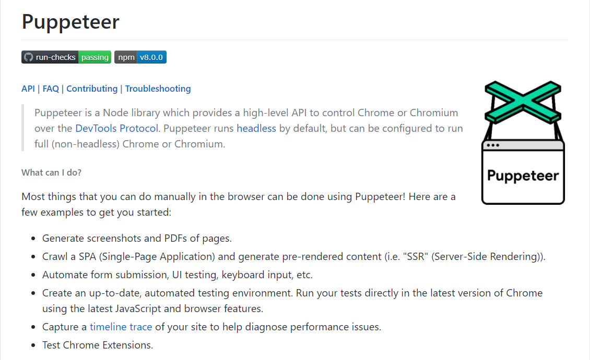
为了让 JMeter 能并发调用，需要编写 Java 代码调用 Puppeteer，听着有点想象力，实际上已经有封装好的开源库了：jvppeteer。
写 Java 代码
在pom.xml中添加依赖：
<dependency>
<groupId>io.github.fanyong920</groupId>
<artifactId>jvppeteer</artifactId>
<version>1.1.2</version>
</dependency>
<dependency>
<groupId>org.apache.jmeter</groupId>
<artifactId>ApacheJMeter_core</artifactId>
<version>5.3</version>
</dependency>
<dependency>
<groupId>org.apache.jmeter</groupId>
<artifactId>ApacheJMeter_java</artifactId>
<version>5.3</version>
</dependency>
jvppeteer是 Java 封装 Puppeteer 包，ApacheJMeter_core和ApacheJMeter_java用来扩展 JMeter。
新建\src\main\java\App.java：
import com.ruiyun.jvppeteer.core.Puppeteer;
import com.ruiyun.jvppeteer.core.browser.Browser;
import com.ruiyun.jvppeteer.core.page.Page;
import com.ruiyun.jvppeteer.options.LaunchOptions;
import com.ruiyun.jvppeteer.options.LaunchOptionsBuilder;
import org.apache.jmeter.config.Arguments;
import org.apache.jmeter.protocol.java.sampler.JavaSamplerClient;
import org.apache.jmeter.protocol.java.sampler.JavaSamplerContext;
import org.apache.jmeter.samplers.SampleResult;
import java.io.IOException;
import java.nio.charset.StandardCharsets;
import java.util.ArrayList;
public class App implements JavaSamplerClient {
Browser browser;
public Arguments getDefaultParameters() {
Arguments params = new Arguments();
params.addArgument("chromePath", "C:\\Program Files (x86)\\Google\\Chrome\\Application\\chrome.exe");
params.addArgument("fakeVideoPath", "D:\\test.y4m");
params.addArgument("fakeAudioPath", "D:\\test.wav");
params.addArgument("isHeadless", "true");
params.addArgument("isLocalMedia", "true");
params.addArgument("isDefaultMedia", "false");
params.addArgument("meetingUrl", "https://test.io");
return params;
}
@Override
public void setupTest(JavaSamplerContext javaSamplerContext) {
String chromePath = javaSamplerContext.getParameter("chromePath");
String fakeVideoPath = javaSamplerContext.getParameter("fakeVideoPath");
String fakeAudioPath = javaSamplerContext.getParameter("fakeAudioPath");
String path = new String(chromePath.getBytes(), StandardCharsets.UTF_8);
ArrayList<String> argList = new ArrayList<>();
argList.add("--no-sandbox");
argList.add("--disable-setuid-sandbox");
argList.add("--ignore-certificate-errors");
argList.add("--use-fake-ui-for-media-stream");
argList.add("--use-fake-device-for-media-stream");
if (javaSamplerContext.getParameter("isLocalMedia").equals("true")) {
argList.add("--use-file-for-fake-video-capture=" + fakeVideoPath);
argList.add("--use-file-for-fake-audio-capture=" + fakeAudioPath);
}
boolean isHeadless = javaSamplerContext.getParameter("isHeadless").equals("true");
LaunchOptions options = new LaunchOptionsBuilder().withArgs(argList).withHeadless(isHeadless).withExecutablePath(path).build();
try {
browser = Puppeteer.launch(options);
} catch (IOException e) {
e.printStackTrace();
}
}
@Override
public SampleResult runTest(JavaSamplerContext javaSamplerContext) {
try {
Page page = browser.newPage();
page.goTo(javaSamplerContext.getParameter("meetingUrl"));
} catch (Exception e) {
e.printStackTrace();
}
return null;
}
@Override
public void teardownTest(JavaSamplerContext javaSamplerContext) {
browser.close();
}
}
App类继承了JavaSamplerClient类。getDefaultParameters()定义了 JMeter 界面参数。setupTest()是测试初始化，创建无头浏览器。runTest()是测试执行，访问会议 URL 进行推流。teardownTest()是测试清理，关闭无头浏览器。setupTest()和teardownTest()在运行时每个线程只会执行一次。
无头浏览器核心参数配置如下：
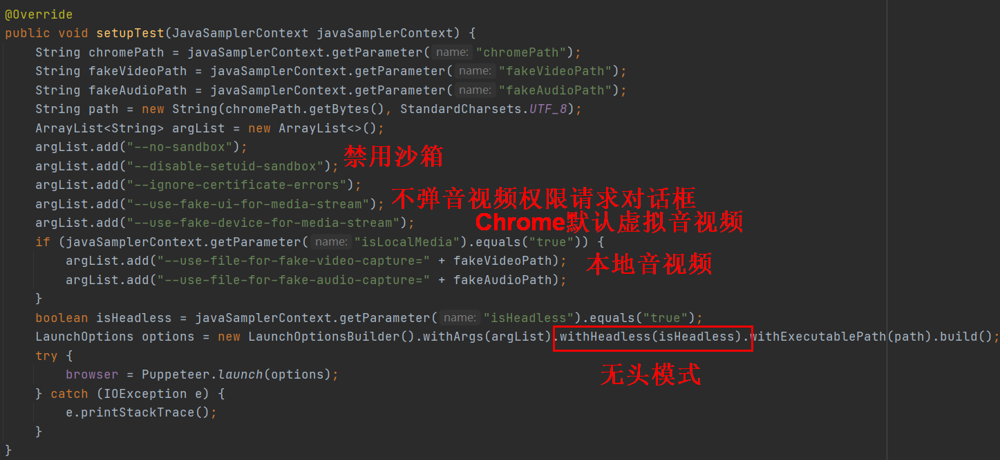
打 Jar 包
Java 代码写好后，需要打成 jar 包提供给 JMeter 调用。打包过程如下：
点击右上角 Project Structure：
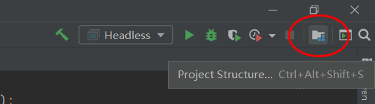
打开 Artifacts，点击+号，填写名字，在右边区域双击编译后输出文件目录到左边：
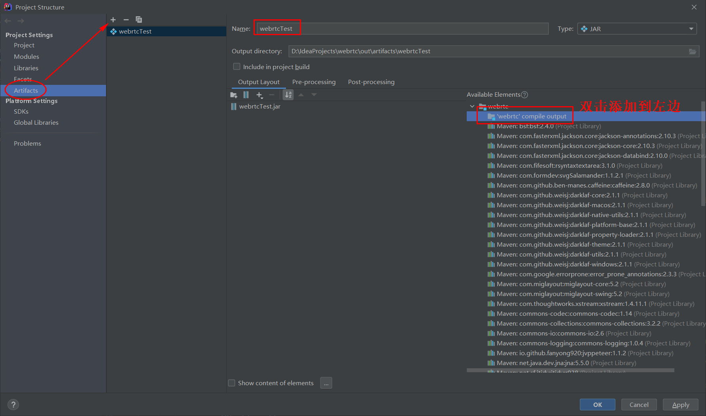
点击 OK 确认后，从菜单栏找到 Build Artifacts 点击：
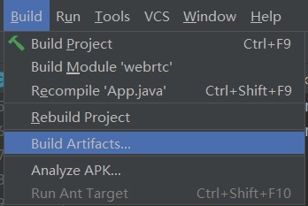
Build 就可以了：
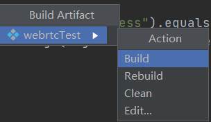
JMeter 使用
首先需要把 jar 包复制到lib\ext目录下，webrtcTest.jar位置如下：
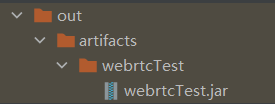
除了webrtcTest.jar，还依赖 3 个 jar 包，在Settings\Build\Build Tools\Maven找到Local repository本地仓库目录后打开，jvppeteer-1.1.2.jar存放位置如下：
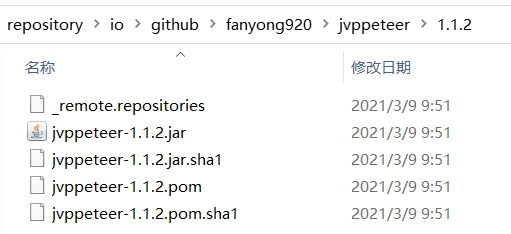
commons-compress-1.20.jar存放位置如下：
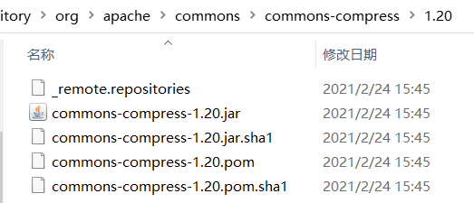
Java-WebSocket-1.5.0.jar存放位置如下：
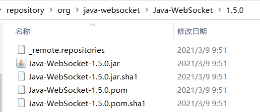
然后打开 JMeter，添加线程组，添加 Java 请求，选择刚才创建的类，初始参数也加载出来了：
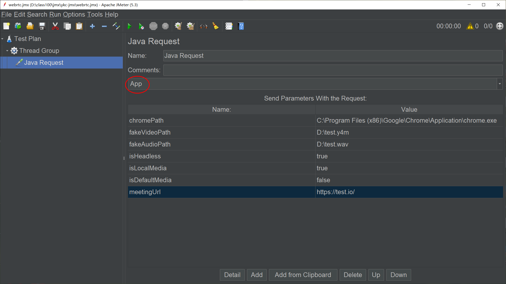
默认音视频流是这样：
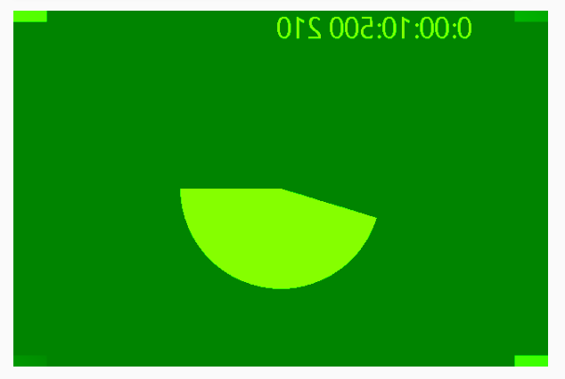
本地音视频流是这样：
脚本弄好了就可以开始对 WebRTC 应用进行压测了。
小结
本文介绍了如何使用 Java 对 Puppeteer 封装的 jvppeteer，实现对 WebRTC 进行本地音视频流的压测脚本，打包成 jar 包后，可以在 JMeter 中进行扩展，通过 Java 请求 Sampler 来调用。Headless Chrome 对.y4m格式视频和.wav格式音频支持较好，建议用这两种格式做测试。
参考资料：
https://www.cnblogs.com/chenkx6/p/13639629.html
https://baike.baidu.com/item/WebRTC/5522744?fr=aladdin
https://github.com/puppeteer/puppeteer
https://github.com/fanyong920/jvppeteer
.y4m 视频下载 https://media.xiph.org/video/derf/